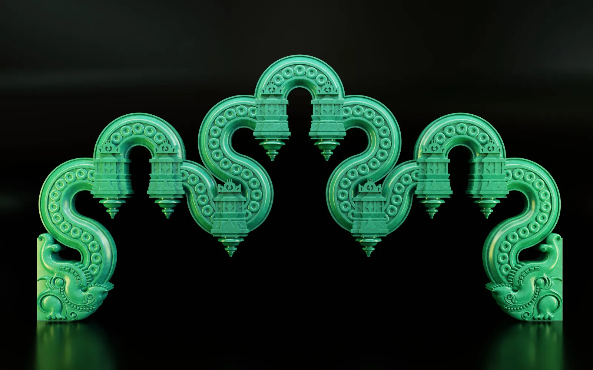
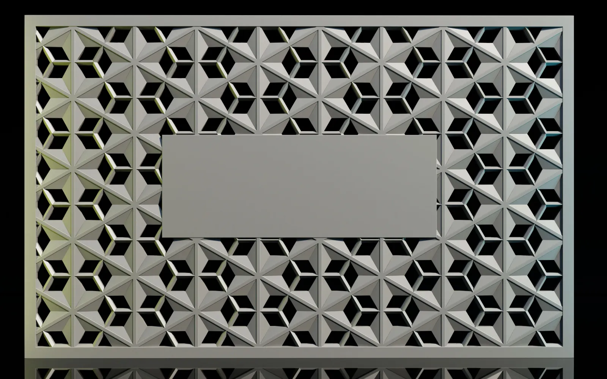
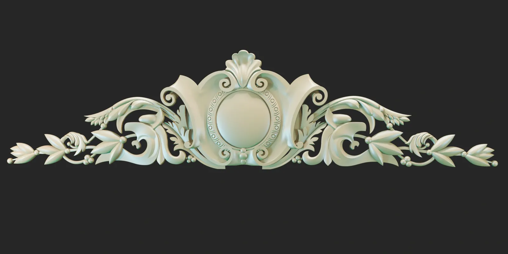
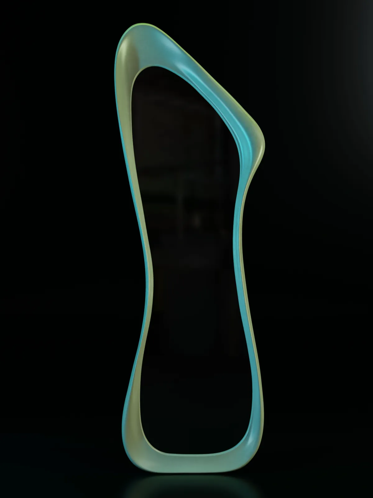
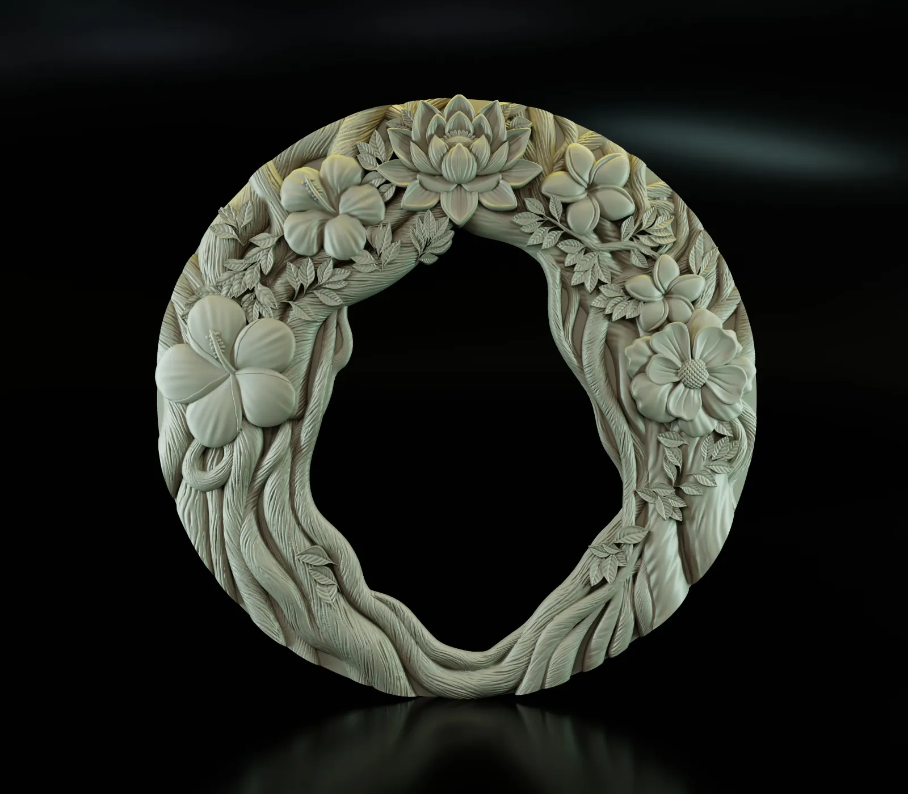
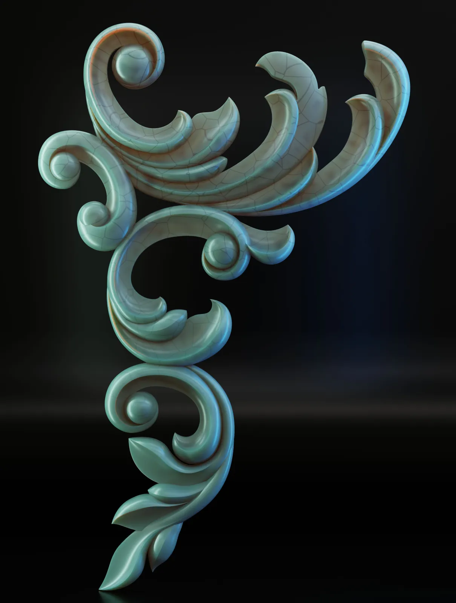
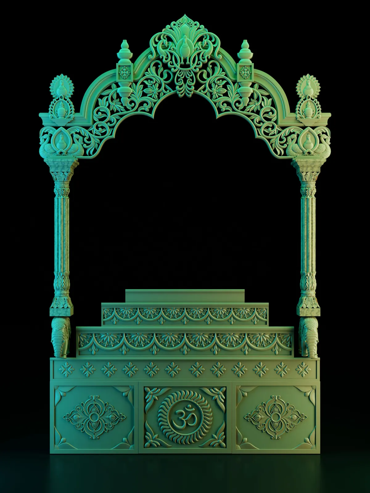
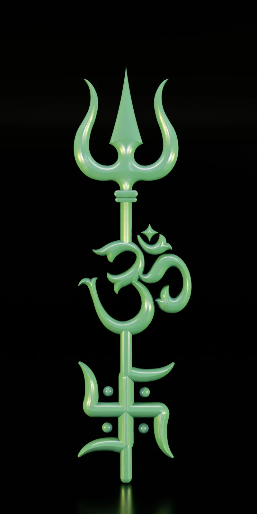
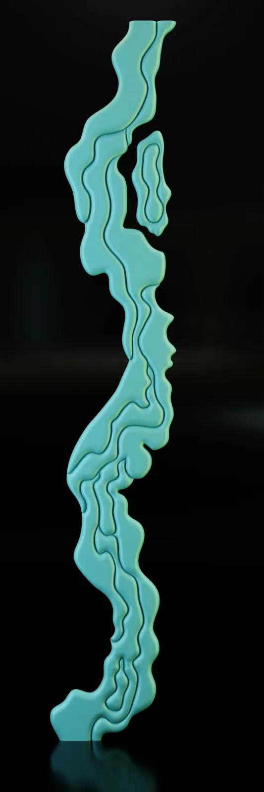

DHYANA ENGRAVE / PORTFOLIO
Architectural
3D Models
A collection of detailed 3D architectural and decorative models created for CNC production and custom fabrication.
← Back to Portfolio
Classic Ornamental Panel
01Symmetrical ornamental 3D panel with detailed scrollwork, designed for decorative CNC carving and interiors.

Floral Relief Panel
02Elegant floral relief featuring layered flowers and leaves, created for CNC wall and furniture decoration.

Geometric 3D Panel
03Modern repeating geometric pattern designed for CNC wall panels, partitions and interior applications.

Abstract Pebble Panel
04Contemporary organic 3D composition with smooth flowing forms for modern decorative wall applications.

Flowing Wave Panel
05Sculpted wave-inspired surface with smooth flowing depth, designed for CNC feature walls and interiors.

Tropical Leaf Panel
06Detailed botanical panel featuring layered tropical leaves for decorative CNC carving and feature walls.
Vertical Floral Panel
07Narrow ornamental floral composition designed for doors, pillars and decorative CNC inserts.

Floral Vine Panel
08Delicate climbing floral pattern with fine branches and leaves, suitable for CNC decorative panels.

Modern Floral Relief
09Artistic floral composition combining layered petals and textured forms for contemporary CNC decoration.

Classic Rosette Panel
010Traditional ornamental rosette design with symmetrical carved details for furniture and architectural decoration.